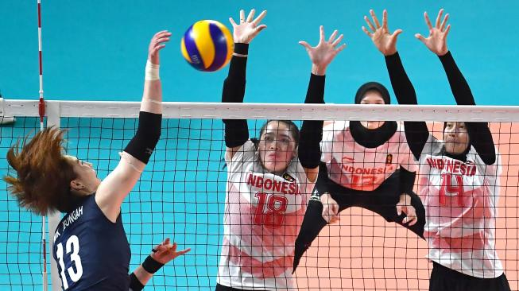
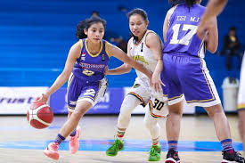

Ekstakulikuler
Voli
Klub Voli di Nekoma High School adalah salah satu kegiatan ekstrakurikuler yang paling populer di sekolah. Dikenal dengan semangat tim yang tinggi, klub ini bertujuan untuk mengembangkan keterampilan teknik dan strategi permainan voli di kalangan siswa. Dengan pelatih berpengalaman, anggota klub mengikuti latihan rutin yang intensif, memfokuskan pada kerjasama tim dan pengembangan individu.

NeBas
NeBas (Nekoma Basketball) di Nekoma High School adalah salah satu ekstrakurikuler yang sangat dinamis dan menarik bagi siswa yang mencintai olahraga. NeBas bertujuan untuk mengembangkan keterampilan dasar basket, strategi permainan, dan kerjasama tim. Dengan pelatih yang berpengalaman, anggota klub berlatih secara rutin untuk meningkatkan teknik dribbling, shooting, dan defense. NeBas aktif berpartisipasi dalam berbagai turnamen antarsekolah, memberi siswa kesempatan untuk bersaing dan menunjukkan kemampuan mereka di lapangan. Selain kompetisi, kita juga menekankan nilai-nilai seperti disiplin, kerja keras, dan sportivitas, yang sangat penting dalam setiap pertandingan.